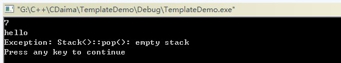
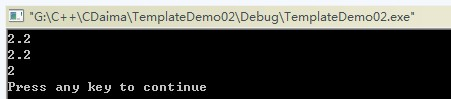

模板是C++支持参数化多态的工具，使用模板可以使用户为类或者函数声明一种一般模式，使得类中的某些数据成员或者成员函数的参数、返回值取得任意类型。
模板是一种对类型进行参数化的工具；
通常有两种形式：函数模板和类模板；
函数模板针对仅参数类型不同的函数；
类模板针对仅数据成员和成员函数类型不同的类。
使用模板的目的就是能够让程序员编写与类型无关的代码。比如编写了一个交换两个整型int 类型的swap函数，这个函数就只能实现int 型，对double，字符这些类型无法实现，要实现这些类型的交换就要重新编写另一个swap函数。使用模板的目的就是要让这程序的实现与类型无关，比如一个swap模板函数，即可以实现int 型，又可以实现double型的交换。模板可以应用于函数和类。下面分别介绍。
注意：模板的声明或定义只能在全局，命名空间或类范围内进行。即不能在局部范围，函数内进行，比如不能在main函数中声明或定义一个模板。
一、函数模板通式
1、函数模板的格式：
template <class 形参名，class 形参名，......> 返回类型 函数名(参数列表)
{
函数体
}
其中template和class是关见字，class可以用typename 关见字代替，在这里typename 和class没区别，<>括号中的参数叫模板形参，模板形参和函数形参很相像，模板形参不能为空。一但声明了模板函数就可以用模板函数的形参名声明类中的成员变量和成员函数，即可以在该函数中使用内置类型的地方都可以使用模板形参名。模板形参需要调用该模板函数时提供的模板实参来初始化模板形参，一旦编译器确定了实际的模板实参类型就称他实例化了函数模板的一个实例。比如swap的模板函数形式为:
template <class T> void swap(T& a, T& b){}，
当调用这样的模板函数时类型T就会被被调用时的类型所代替，比如swap(a,b)其中a和b是int 型，这时模板函数swap中的形参T就会被int 所代替，模板函数就变为swap(int &a, int &b)。而当swap(c,d)其中c和d是double类型时，模板函数会被替换为swap(double &a, double &b)，这样就实现了函数的实现与类型无关的代码。
2、注意：对于函数模板而言不存在 h(int,int) 这样的调用，不能在函数调用的参数中指定模板形参的类型，对函数模板的调用应使用实参推演来进行，即只能进行 h(2,3) 这样的调用，或者int a, b; h(a,b)。
函数模板的示例演示将在下文中涉及！
二、类模板通式
1、类模板的格式为：
template<class 形参名，class 形参名，…> class 类名
{ ... };
类模板和函数模板都是以template开始后接模板形参列表组成，模板形参不能为空，一但声明了类模板就可以用类模板的形参名声明类中的成员变量和成员函数，即可以在类中使用内置类型的地方都可以使用模板形参名来声明。比如
template<class T> class A{public: T a; T b; T hy(T c, T &d);};
在类A中声明了两个类型为T的成员变量a和b，还声明了一个返回类型为T带两个参数类型为T的函数hy。
2、类模板对象的创建：比如一个模板类A，则使用类模板创建对象的方法为A<int> m;在类A后面跟上一个<>尖括号并在里面填上相应的类型，这样的话类A中凡是用到模板形参的地方都会被int 所代替。当类模板有两个模板形参时创建对象的方法为A<int, double> m;类型之间用逗号隔开。
3、对于类模板，模板形参的类型必须在类名后的尖括号中明确指定。比如A<2> m;用这种方法把模板形参设置为int是错误的（编译错误：error C2079: 'a' uses undefined class 'A<int>'），类模板形参不存在实参推演的问题。也就是说不能把整型值2推演为int 型传递给模板形参。要把类模板形参调置为int 型必须这样指定A<int> m。
4、在类模板外部定义成员函数的方法为：
template<模板形参列表> 函数返回类型 类名<模板形参名>::函数名(参数列表){函数体}，
比如有两个模板形参T1，T2的类A中含有一个void h()函数，则定义该函数的语法为：
template<class T1,class T2> void A<T1,T2>::h(){}。
注意：当在类外面定义类的成员时template后面的模板形参应与要定义的类的模板形参一致。
5、再次提醒注意：模板的声明或定义只能在全局，命名空间或类范围内进行。即不能在局部范围，函数内进行，比如不能在main函数中声明或定义一个模板。
三、模板的形参
有三种类型的模板形参：类型形参，非类型形参和模板形参。
1、类型形参
1.1 、类型模板形参：类型形参由关见字class或typename后接说明符构成，如template<class T> void h(T a){};其中T就是一个类型形参，类型形参的名字由用户自已确定。模板形参表示的是一个未知的类型。模板类型形参可作为类型说明符用在模板中的任何地方，与内置类型说明符或类类型说明符的使用方式完全相同，即可以用于指定返回类型，变量声明等。
作者原版：1.2、不能为同一个模板类型形参指定两种不同的类型，比如template<class T>void h(T a, T b){}，语句调用h(2, 3.2)将出错，因为该语句给同一模板形参T指定了两种类型，第一个实参2把模板形参T指定为int，而第二个实参3.2把模板形参指定为double，两种类型的形参不一致，会出错。（针对函数模板）
作者原版：1.2针对函数模板是正确的，但是忽略了类模板。下面将对类模板的情况进行补充。
本人添加1.2补充版（针对于类模板）、当我们声明类对象为：A<int> a，比如template<class T>T g(T a, T b){}，语句调用a.g(2, 3.2)在编译时不会出错，但会有警告，因为在声明类对象的时候已经将T转换为int类型，而第二个实参3.2把模板形参指定为double，在运行时，会对3.2进行强制类型转换为3。当我们声明类的对象为：A<double> a,此时就不会有上述的警告，因为从int到double是自动类型转换。
演示示例１：
TemplateDemo.h
编译结果：
--------------------Configuration: TemplateDemo - Win32 Debug-------------------- Compiling... TemplateDemo.cpp G:\C++\CDaima\TemplateDemo\TemplateDemo.cpp(12) : warning C4244: 'argument' : conversion from 'const double' to 'int', possible loss of data TemplateDemo.obj - 0 error(s), 1 warning(s)
运行结果： 5
我们从上面的测试示例中可以看出，并非作者原作中的那么严密！此处仅是本人跟人测试结果！请大家本着实事求是的态度，自行验证！
2、非类型形参
2.1 、非类型模板形参：模板的非类型形参也就是内置类型形参，如template<class T, int a> class B{};其中int a就是非类型的模板形参。
2.2、 非类型形参在模板定义的内部是常量值，也就是说非类型形参在模板的内部是常量。
2.3、 非类型模板的形参只能是整型，指针和引用，像double，String, String **这样的类型是不允许的。但是double &，double *，对象的引用或指针是正确的。
2.4、 调用非类型模板形参的实参必须是一个常量表达式，即他必须能在编译时计算出结果。
2.5 、注意：任何局部对象，局部变量，局部对象的地址，局部变量的地址都不是一个常量表达式，都不能用作非类型模板形参的实参。全局指针类型，全局变量，全局对象也不是一个常量表达式，不能用作非类型模板形参的实参。
2.6、 全局变量的地址或引用，全局对象的地址或引用const类型变量是常量表达式，可以用作非类型模板形参的实参。
2.7 、sizeof表达式的结果是一个常量表达式，也能用作非类型模板形参的实参。
2.8 、当模板的形参是整型时调用该模板时的实参必须是整型的，且在编译期间是常量，比如template <class T, int a> class A{};如果有int b，这时A<int, b> m;将出错，因为b不是常量，如果const int b，这时A<int, b> m;就是正确的，因为这时b是常量。
2.9 、非类型形参一般不应用于函数模板中，比如有函数模板template<class T, int a> void h(T b){}，若使用h(2)调用会出现无法为非类型形参a推演出参数的错误，对这种模板函数可以用显示模板实参来解决，如用h<int, 3>(2)这样就把非类型形参a设置为整数3。显示模板实参在后面介绍。
2.10、 非类型模板形参的形参和实参间所允许的转换
1、允许从数组到指针，从函数到指针的转换。如：template <int *a> class A{}; int b[1]; A<b> m;即数组到指针的转换
2、const修饰符的转换。如：template<const int *a> class A{}; int b; A<&b> m; 即从int *到const int *的转换。
3、提升转换。如：template<int a> class A{}; const short b=2; A<b> m; 即从short到int 的提升转换
4、整值转换。如：template<unsigned int a> class A{}; A<3> m; 即从int 到unsigned int的转换。
5、常规转换。
非类型形参演示示例1：
由用户自己亲自指定栈的大小，并实现栈的相关操作。
TemplateDemo.h
TemplateDemo.cpp

非类型形参演示示例2：
TemplateDemo01.h
TemplateDemo01.cpp
运行结果：-1
TemplateDemo01.cpp
运行结果： 1
TemplateDemo01.h
TempalteDemo01.cpp
非类型形参演示示例3：
TemplateDemo02.cpp
运行结果：

cout<<max<int>(2.1,2.2)<<endl; //显示指定的模板参数，会将函数函数直接转换为int。
此语句会出现警告：
--------------------Configuration: TemplateDemo02 - Win32 Debug-------------------- Compiling... TemplateDemo02.cpp G:\C++\CDaima\TemplateDemo02\TemplateDemo02.cpp(11) : warning C4244: 'argument' : conversion from 'const double' to 'const int', possible loss of data G:\C++\CDaima\TemplateDemo02\TemplateDemo02.cpp(11) : warning C4244: 'argument' : conversion from 'const double' to 'const int', possible loss of data TemplateDemo02.obj - 0 error(s), 2 warning(s)
四、类模板的默认模板类型形参
1、可以为类模板的类型形参提供默认值，但不能为函数模板的类型形参提供默认值。函数模板和类模板都可以为模板的非类型形参提供默认值。
2、类模板的类型形参默认值形式为：template<class T1, class T2=int> class A{};为第二个模板类型形参T2提供int型的默认值。
3、类模板类型形参默认值和函数的默认参数一样，如果有多个类型形参则从第一个形参设定了默认值之后的所有模板形参都要设定默认值，比如template<class T1=int, class T2>class A{};就是错误的，因为T1给出了默认值，而T2没有设定。
4、在类模板的外部定义类中的成员时template 后的形参表应省略默认的形参类型。比如template<class T1, class T2=int> class A{public: void h();}; 定义方法为template<class T1,class T2> void A<T1,T2>::h(){}。
定义类模板类型形参：
演示实例1：
TemplateDemo.h
TemplateDemo.cpp
运行结果： 5
类模板的默认模板类型形参示例1：
TemplateDemo03.h
TemplateDemo03.cpp
运行结果： 2
在类模板的外部定义类中的成员时template 后的形参表应省略默认的形参类型，如果没有省略，不会出现编译错误而是提出警告：
--------------------Configuration: TemplateDemo03 - Win32 Debug-------------------- Compiling... TemplateDemo03.cpp g:\c++\cdaima\templatedemo03\templatedemo03.h(12) : warning C4519: default template arguments are only allowed on a class template; ignored TemplateDemo03.obj - 0 error(s), 1 warning(s)
原作者：类模板类型形参默认值和函数的默认参数一样，如果有多个类型形参则从第一个形参设定了默认值之后的所有模板形参都要设定默认值，比如template<class T1=int, class T2>class A{};就是错误的，因为T1给出了默认值，而T2没有设定。
类模板的默认模板类型形参示例2：
TemplateDemo03.h
TemplateDemo03.cpp
运行结果：9
TemplateDemo03.h
TemplateDemo03.cpp
编译错误：
--------------------Configuration: TemplateDemo03 - Win32 Debug-------------------- Compiling... TemplateDemo03.cpp g:\c++\cdaima\templatedemo03\templatedemo03.h(12) : error C2244: 'CeilDemo<T1,T2,T3>::ceil' : unable to resolve function overload g:\c++\cdaima\templatedemo03\templatedemo03.cpp(6) : error C2065: 'cd' : undeclared identifier g:\c++\cdaima\templatedemo03\templatedemo03.cpp(6) : error C2228: left of '.ceil' must have class/struct/union type Error executing cl.exe. TemplateDemo03.obj - 3 error(s), 0 warning(s)
从上面的例子我们可以看出，当我们试图把T2和T3定义为double类型就会出现错误（T1默认定义的是int类型）。那是不是我们按照作者所说把T2和T3也设定为默认值double，是否还会出现错误？看下面的示例：
类模板的默认模板类型形参示例4：
TemplateDemo03.h
TemplateDemo03.cpp
编译错误：
--------------------Configuration: TemplateDemo03 - Win32 Debug-------------------- Compiling... TemplateDemo03.cpp g:\c++\cdaima\templatedemo03\templatedemo03.h(12) : error C2244: 'CeilDemo<T1,T2,T3>::ceil' : unable to resolve function overload g:\c++\cdaima\templatedemo03\templatedemo03.cpp(6) : error C2065: 'cd' : undeclared identifier g:\c++\cdaima\templatedemo03\templatedemo03.cpp(6) : error C2228: left of '.ceil' must have class/struct/union type Error executing cl.exe. TemplateDemo03.obj - 3 error(s), 0 warning(s)
从结果我们可以看出，和上例是一样的错误。从实例中我们可以总结如下：类模板如果有多个类型形参，如果使用类型形参默认值则尽量放在参数列表的末尾，而且默认的参数类型必须相同。如果从第一个形参设定了默认值之后的所有模板形参都要设定和第一个形参同类型的默认值。（声明：本人也是刚接触C++，以上只是我经过实例演示对原作者提出的一些质疑，可能我的示例有不到之处，还望大神们不吝赐教，共同完善此博客，给像我一样的菜鸟提供一个学习的平台！）
接下来验证"不能为函数模板的类型形参提供默认值"：
类模板的默认模板类型形参示例5：
TemplateDemo04.cpp
编译错误：
--------------------Configuration: TemplateDemo04 - Win32 Debug-------------------- Compiling... TemplateDemo04.cpp g:\c++\cdaima\templatedemo04\templatedemo04.cpp(4) : error C2062: type 'int' unexpected Error executing cl.exe. TemplateDemo04.obj - 1 error(s), 0 warning(s)
更改之后的 TemplateDemo.cpp
TemplateDemo.cpp
运行结果： 261.1
原作者演示实例如下：
类模板非类型形参示例
原文地址：
https://www.cnblogs.com/gw811/archive/2012/10/25/2738929.html
http://www.cnblogs.com/gw811/archive/2012/10/25/2736224.html